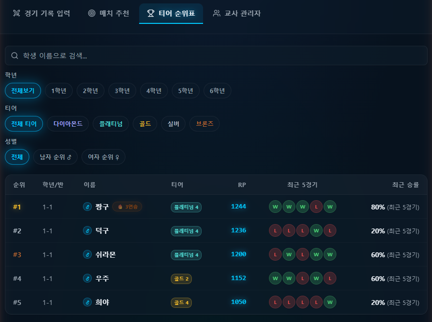
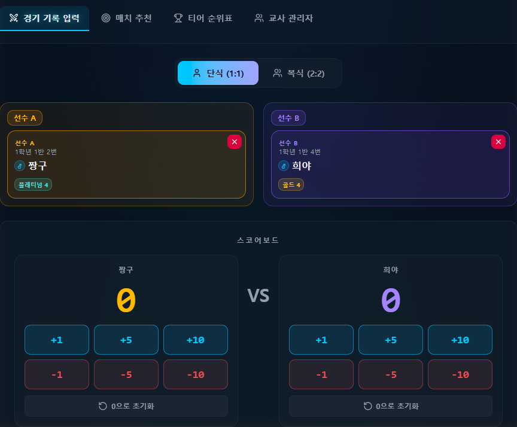
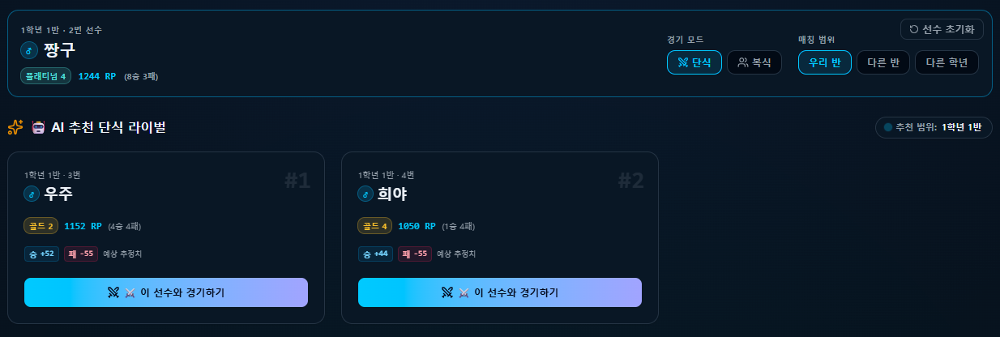
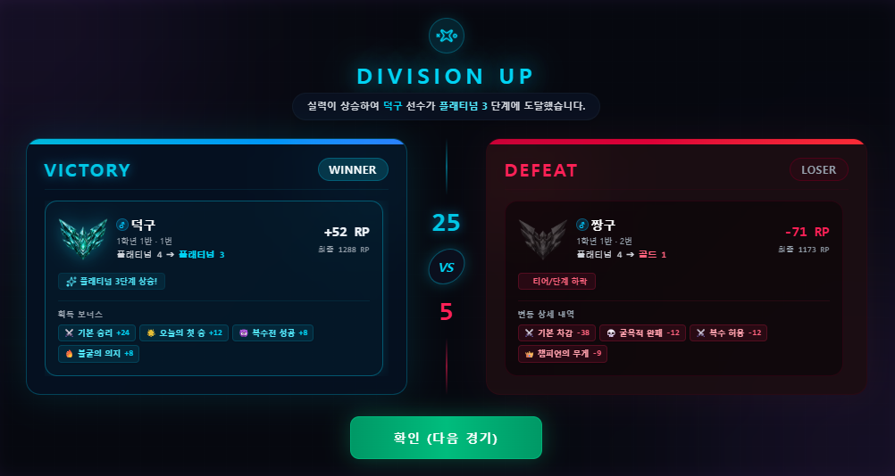
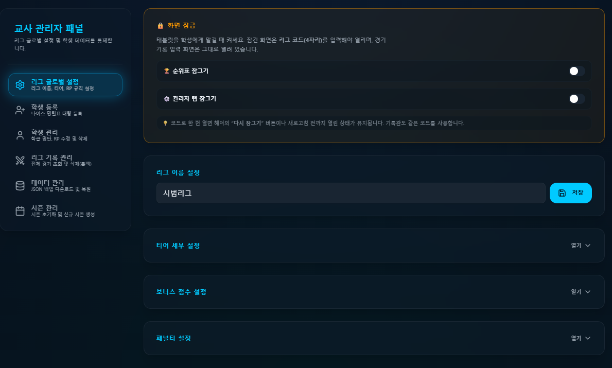
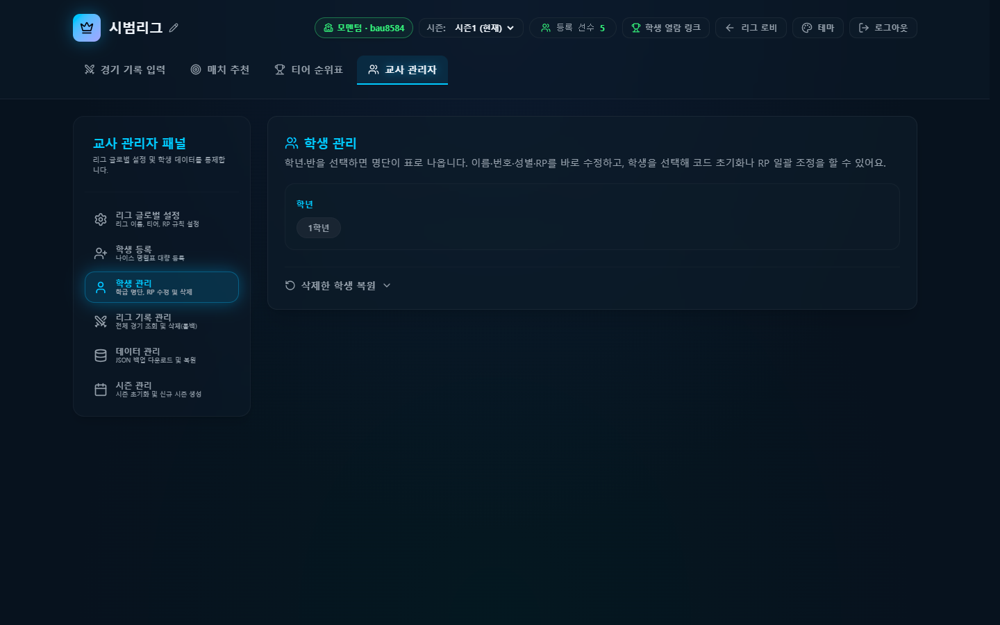
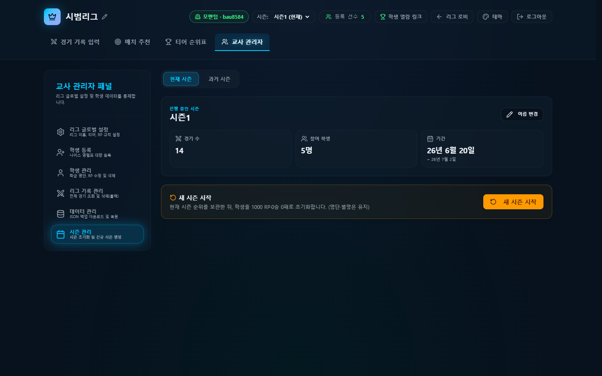
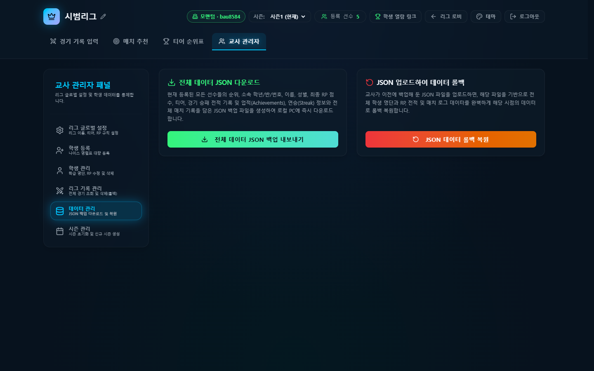
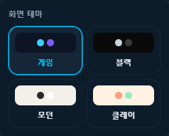
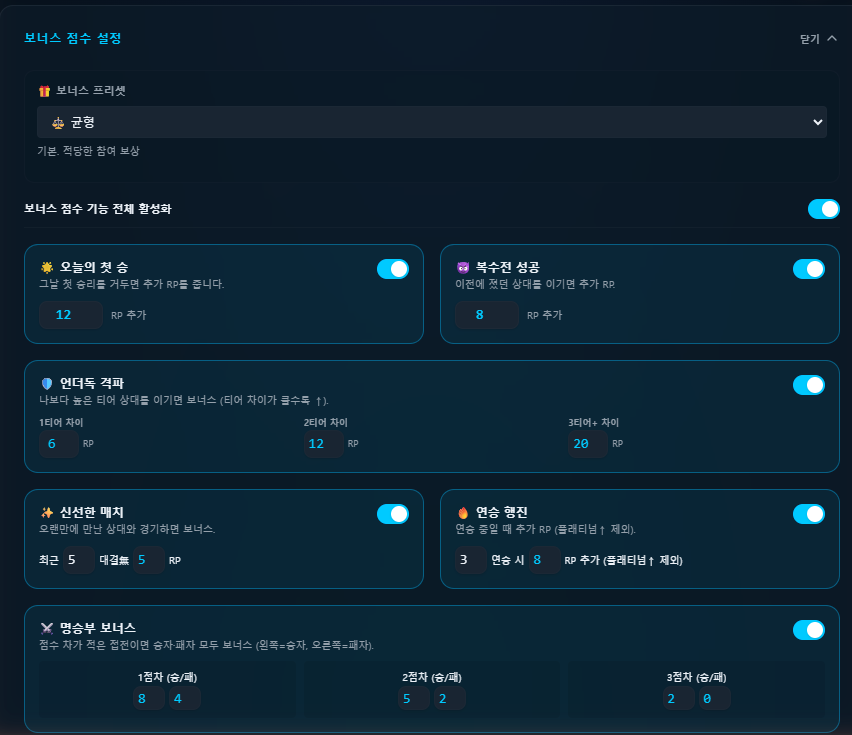

배드민턴 학교용 리그
경기 결과만 넣으면 티어·랭킹이 실시간으로 착착.

체육 시간에 반 대항전이나 배드민턴 리그 한 번 돌려보신 쌤들은 아실 거예요. 경기 자체는 아이들이 알아서 신나게 하는데, 문제는 그 뒤입니다. 누가 이겼는지 받아 적고, 칠판에 순위표 고쳐 쓰고, 다음 대진 짜고… 정신 차려보면 쉬는 시간이 또 사라져 있죠.
그래서 또 만들었습니다. 누가 말려요 😅 학교용 배드민턴 리그예요. 체육 수업이나 반 대항전 리그를, 티어 게임처럼 굴리는 도구입니다.
브론즈에서 다이아까지, 순위는 앱이
순위표에 티어(브론즈~다이아)·RP 점수·최근 5경기 승패·승률이 착 정리돼요. 학년·티어·성별로 필터도 되고, 3연승이면 뱃지도 붙습니다. 칠판 지우개 들고 순위표 고쳐 쓰던 그 반복을 앱한테 넘기는 거예요. 딱 그만큼, 손 덜 가는 교실이 되는 거고요.
경기 점수는 탭 몇 번으로
단식·복식 골라, 선수 두 명 고르고, +1·+5·+10 버튼으로 점수만 올리면 끝이에요. 종이도 볼펜도 필요 없고, 잘못 눌러도 -1이나 0 초기화로 바로 고칩니다. 심판 보면서 한 손으로 채점되게 만들었어요.

다음 상대, AI가 골라드려요
"쟤랑 쟤랑 붙여도 되나?" 고민 안 하셔도 돼요. 선수 하나 고르면 우리 반·다른 반·다른 학년 중에서 실력이 비슷한 라이벌을 AI가 추천해 줍니다. 이기면 RP 얼마 오르고 지면 얼마 빠지는지까지 미리 보여줘서, 아이도 "해볼 만한데?" 하고 덤벼요. 🏸

경기 끝나면 이 화면, 애들이 난리 나요
경기가 끝나면 DIVISION UP 정산 화면이 뜹니다. 이긴 쪽 승급·진 쪽 강등, 오른 RP, 오늘의 첫 승·복수전 성공 같은 보너스까지 게임 결과처럼 촥 펼쳐져요. 이게 진짜 물건입니다. "나 승급했어!" 한마디에 다음 판을 스스로 기다리거든요. 동기부여는 앱이 대신 해주니, 쌤 손은 그만큼 덜 가고요.

태블릿 넘겨도 관리자 화면은 잠금
태블릿 한 대로 리그를 굴리다 보면 아이가 만지게 되잖아요. 그래서 화면 잠금을 넣었어요. 순위표·관리자 탭은 리그 코드로 잠가두고, 기록 입력 화면만 열어서 넘길 수 있습니다. 명단은 나이스 명렬표로 대량등록, 데이터는 JSON으로 백업, 시즌도 새로 열 수 있고요. 운영 잡무는 최대한 앱이 가져갑니다.

운영은 관리자에서 한 번에
학기 초 명단 등록부터 학기 말 정리까지, 손 갈 일은 관리자 화면에서 한 번에 끝나요. 학생 관리에선 나이스 명렬표로 우리 반 명단을 올리고, RP도 직접 손보거나 잘못 지운 학생은 복원까지 됩니다. 🐈

학기가 바뀌면 새 시즌을 열면 돼요. RP는 다 같이 1000점부터 다시 출발하고, 아이들 명단은 그대로 유지됩니다. 새 학기 리그를 처음부터 공정하게 다시 굴리는 거죠.

그리고 제일 마음 편한 건 데이터 관리예요. 전체 리그를 JSON 파일 하나로 통째로 내보내 두면, 태블릿이 바뀌거나 뭔가 꼬여도 그 파일 올려서 그대로 되살립니다. 데이터 날아갈 걱정 없이 학기를 굴리시라고요.

보는 재미: 테마 4가지
같은 리그도 화면 톤을 바꾸면 분위기가 확 달라져요. 게임·블랙·모던·클레이 네 가지 테마를 팝오버에서 슥 골라 쓸 수 있습니다. 우리 반 취향이나 그날 수업 분위기에 맞춰, 아이들이 좋아하는 톤으로 태블릿 화면을 꾸며 보세요. 게임처럼 화려하게도, 차분한 블랙으로도. 🏸

리그 규칙은 우리 반에 맞게
티어 기준점, 승·패 RP, 보너스와 페널티까지 다 손볼 수 있어요. 짧게 촘촘히 갈지, 오늘의 첫 승에 얼마를 줄지, 굴욕적 완패는 얼마나 뺄지 — 프리셋으로 슥 바꾸거나 표에서 직접 조정하면 됩니다. 우리 반 분위기랑 수업 목적에 맞게 재단하세요.

로그인 한 번이면 시작
구글 계정으로 들어가고, 데이터는 Supabase에 안전하게 담깁니다. 로그인해야 쓰는 서비스지만 세팅이 무겁진 않아요. 우리 반 명단만 올리면 바로 리그가 굴러갑니다. (위 화면들은 전부 가짜 이름으로 만든 데모 리그예요 🐈)
써보러 가기 →구글 로그인이 필요해요. 우리 반 체육 리그부터 가볍게 시작해 보세요.
만드는 재미로 사는 초등쌤, 박덕구 🐈